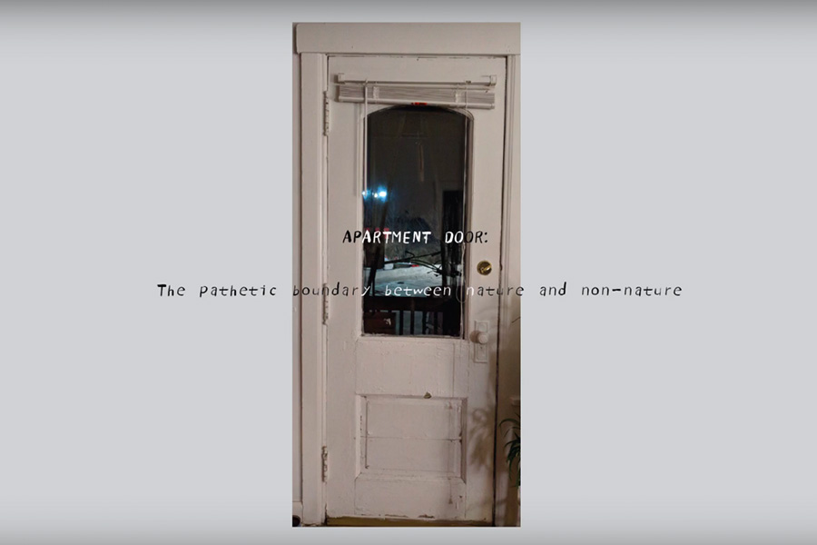

A poem made during lockdown
Video, Text-To-Speech
During COVID-19 time, feeling disconnected from the outside world while staying inside the apartment for too long. I signed up for an online workshop to share and discuss artwork made in response to birding or a nature walk. This poem is made after a near "nature" experience.

Apartment Door: The Pathetic Boundary between Nature and Non-nature
Written in English with onomatopoeias in Chinese, this poem is annotated with Hanyu Pinyin. Onomatopoeia is the formation of a word that phonetically imitates the sound that it describes. Onomatopoeia differs between languages, the sound of wind may be expressed as "swoosh" in English, and "hu hu" in Mandarin. The lifelike narrator's voice is from Hui who is a Text-To-Speech persona from ReadSpeaker. According to the company, the voice of Hui was created from professional voice talents and optimized by using a powerful combination of Artificial Intelligence and machine learning technologies on big amounts of data. The word “nature” is difficult to define. Its vagueness and ambiguity are open for interpretation in this poem.